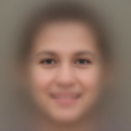
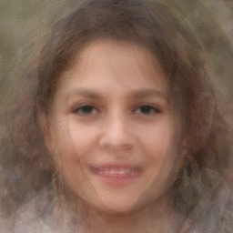
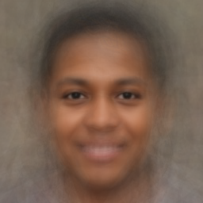

Quais rostos a IA pode gerar?
schedule Tempo de leitura: 10 minutos

{kind=link}
"Rosto genérico padrão"
Criado pela sobreposição de 3000 imagens
aleatórias de rostos humanos falsos
não repetidos gerados pelo
This Person Does Not Exist open_in_new.
B. Fontes e L. Nunes | GAIA

Amostra de rostos do TPDNE.

{kind=link}
"Imagens-conjunto"
Criado pela sobreposição de 10, 30, 100, 300,
1000 e 3000 imagens.
B. Fontes e L. Nunes | GAIA

{kind=link}
'Imagem-conjunto' de pessoas pretas.
B. Fontes e L. Nunes | GAIA
Referências
undo
[ref 1] McCosker, A.; Wilken, R. (2020). Automating Vision: The Social Impact of the New Camera Consciousness. Routledge.
undo
[ref 2] Zuboff, S. (2018). Beginning Ending. Configuring Internal Controls for Software as a Service: Between Fragility and Forgiveness, 109.
undo
[ref 3] Hanna, A., Denton, E., Smart, A., & Smith-Loud, J. (2020, January). Towards a critical race methodology in algorithmic fairness. In Proceedings of the 2020 conference on fairness, accountability, and transparency (pp. 501-512).
undo
[ref 4] Mintz, A., Gobbo, B., Silva, T., & Pilipets, E. (2019, April 17). Interrogating Vision APIs. Retrieved March 18, 2021. Link de acesso open_in_new
undo
[ref 5] Buolamwini, J.; Gebru, T. Gender shades: Intersectional accuracy disparities in commercial gender classification. In: Conference on fairness, accountability and transparency. PMLR, 2018. p. 77-91.
undo
[ref 6] Goodfellow, I.; Pouget-Abadie, J.; Mirza, M.; Xu, B.; Warde-Farley, D.; Ozair, S.; Courville, A.; Bengio, Y. (2014). Generative Adversarial Networks (PDF). Proceedings of the International Conference on Neural Information Processing Systems (NIPS 2014). pp. 2672–2680.
undo
[ref 7] Karras, T., Laine, S., & Aila, T. (2019). A style-based generator architecture for generative adversarial networks. In Proceedings of the IEEE/CVF Conference on Computer Vision and Pattern Recognition (pp. 4401-4410)
undo
[ref 8] Karras, T., Laine, S., Aittala, M., Hellsten, J., Lehtinen, J., & Aila, T. (2020). Analyzing and improving the image quality of stylegan. In Proceedings of the IEEE/CVF Conference on Computer Vision and Pattern Recognition (pp. 8110-8119).
undo
[ref 9] Beiguelman, G. (2020). As verdades dos deepfakes. Retrieved March 25, 2021. Link de acesso open_in_new